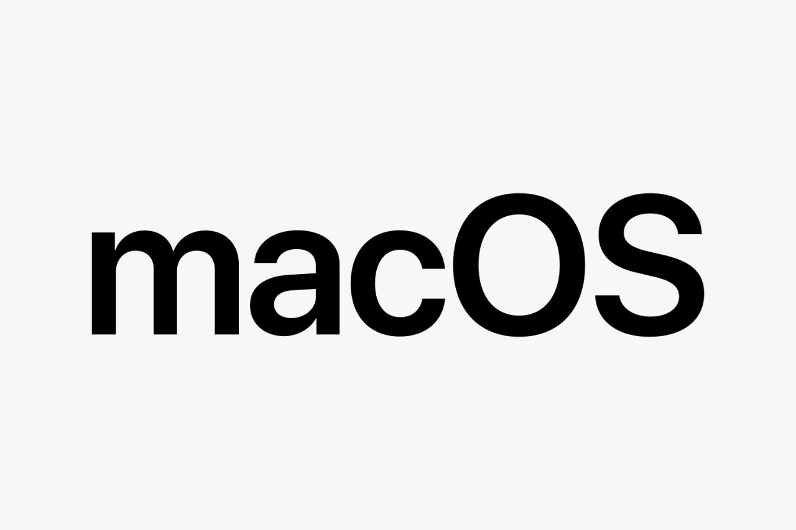

MacOS
macOS (previously called OS X) is a line of operating systems created by Apple. It comes preloaded on all Macintosh
computers, or Macs. Some of the specific versions include Mojave (released in 2018), High Sierra (2017), and Sierra (2016).
According to StatCounter Global Stats, macOS users account for less than 10% of global operating systems—much lower than the
percentage of Windows users (more than 80%). One reason for this is that Apple computers tend to be more expensive. However,
many people do prefer the look and feel of macOS over Windows

Development
Main article: macOS version history
The heritage of what would become macOS had originated at NeXT, a company founded by Steve Jobs following his departure from Apple in 1985. There, the Unix-like NeXTSTEP operating system was developed, and then launched in 1989. The kernel of NeXTSTEP is based upon the Mach kernel, which was originally developed at Carnegie Mellon University, with additional kernel layers and low-level user space code derived from parts of BSD. Its graphical user interface was built on top of an object-oriented GUI toolkit using the Objective-C programming language.
Throughout the early 1990s, Apple had tried to create a "next-generation" OS to succeed its classic Mac OS through the Taligent, Copland and Gershwin projects, but all of them were eventually abandoned.[17] This led Apple to purchase NeXT in 1996, allowing NeXTSTEP, then called OPENSTEP, to serve as the basis for Apple's next generation operating system.[18] This purchase also led to Steve Jobs returning to Apple as an interim, and then the permanent CEO, shepherding the transformation of the programmer-friendly OPENSTEP into a system that would be adopted by Apple's primary market of home users and creative professionals. The project was first code named "Rhapsody" and then officially named Mac OS X
Launch of Mac OS X
Mac OS X was originally presented as the tenth major version of Apple's operating system for Macintosh computers; current versions of macOS retain the major version number "10". Previous Macintosh operating systems (versions of the classic Mac OS) were named using Arabic numerals, as with Mac OS 8 and Mac OS 9. The letter "X" in Mac OS X's name refers to the number 10, a Roman numeral, and Apple has stated that it should be pronounced "ten" in this context.[21][22] However, it is also commonly pronounced like the letter "X".[22][23]
The first version of Mac OS X, Mac OS X Server 1.0, was a transitional product, featuring an interface resembling the classic Mac OS, though it was not compatible with software designed for the older system. Consumer releases of Mac OS X included more backward compatibility. Mac OS applications could be rewritten to run natively via the Carbon API; many could also be run directly through the Classic Environment with a reduction in performance.
The consumer version of Mac OS X was launched in 2001 with Mac OS X 10.0. Reviews were variable, with extensive praise for its sophisticated, glossy Aqua interface, but criticizing it for sluggish performance.[24] With Apple's popularity at a low, the makers of several classic Mac applications such as FrameMaker and PageMaker declined to develop new versions of their software for Mac OS X.[25] Ars Technica columnist John Siracusa, who reviewed every major OS X release up to 10.10, described the early releases in retrospect as 'dog-slow, feature poor' and Aqua as 'unbearably slow and a huge resource hog'
types of macOS
- macOS Catalina
- macOS Mojave
- macOS High Sierra
- macOS Sierra
- OS X El Capitan
Links
- Types
- Microsoft
- main page
- linux